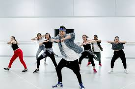
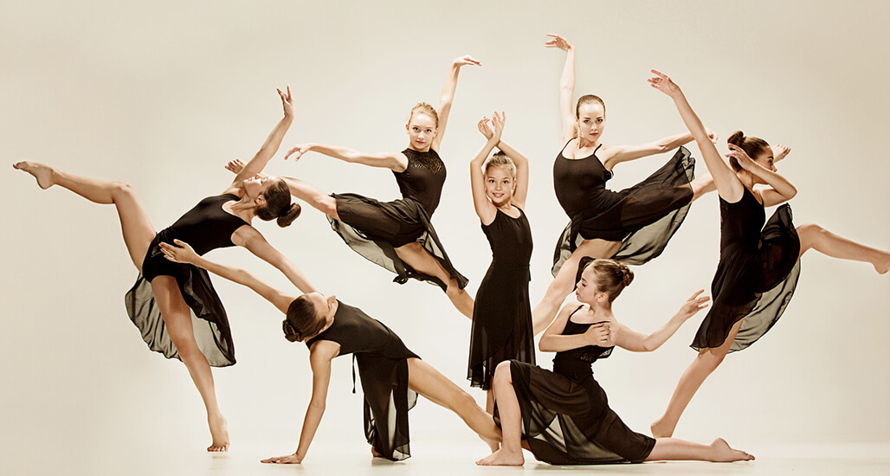

Before, I never know that I was into dancing but when I come to Liger, I know that I can dance really well.
The kind of songs that I dance to are hip hop, kpop, and contemporary. I like hip hop
style because my teacher teach me that. For kpop, it is because I like to lisent to their music video and
they have the dance for the song too, so I can dance to their choreography. Lastly, contemporary is touching
and I can show my emotion through the dance.


In one of my exploration at school, "Human of Cambodia" we did two cotemporary dance for two of the story that we interview. We took about 4 to 5 weeks to make those two choreography.